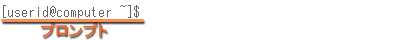
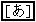
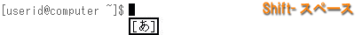
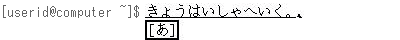
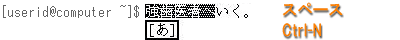
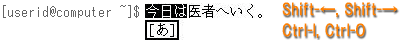
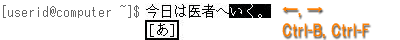
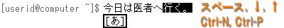
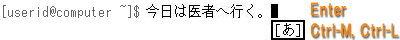
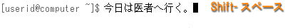

まず，日本語を入力するアプリケーション（ウィンドウ）を選択します．ここでは試しにターミナルを使ってみましょう．
ウィンドウが現れて，その中にプロンプトが表示されたら，[Shift] キーを押しながらスペースバーをタイプしてください．

すると，どこかに

という小さなウィンドウが現れます．これで日本語入力のモードに切り替わります．
そのままローマ字でタイプすると，それがひらがなになって入力されます．

スペースバーをタイプすると，入力したひらがなが漢字かな混じり文に変換されます．

上の例では「強-歯医者へ」でひとつの文節になっています．これを短くするには，Ctrl-I をタイプ([Ctrl] を押しながら I をタイプ）するか，[Shift]を押しながら←（左矢印）キーをタイプします．文節を伸ばすには Ctrl-O をタイプするか，[Shift]を押しながら→（右矢印）キーをタイプします．

変換対象の文節を右に移動するには Ctrl-F をタイプするか，→（右矢印）をタイプします．左に移動するには Ctrl-B をタイプするか，←（左矢印）をタイプします．

次の変換候補を呼び出すにはスペースバーあるいは Ctrl-N あるいは↓（下矢印），前の候補を呼び出すにはCtrl-P あるいは↑(上矢印）をタイプします．なお，カタカナに変換するにはファンクションキーのF7，ひらがなに戻すにはF8を使います．

Ctrl-M か Ctrl-l か [Enter] をタイプすれば，変換結果が確定します．

再度，[Shift]キーを押しながらスペースバーをタイプすれば，日本語入力のモードから抜け出ます．

日本語がうまく入力できないとき日本語がうまく入力できないときは，一旦ログアウトしてログインしなおしてみてください．それでもだめなら教員に相談してください．